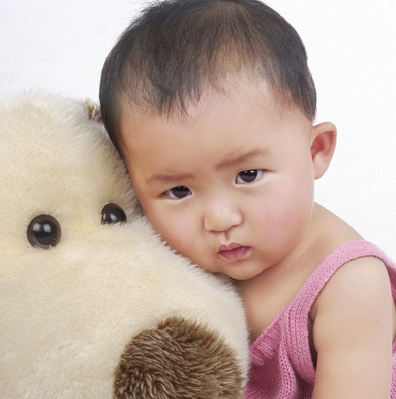

返回首页
成长经历
从牙牙学语的孩提时代，到如今探索在燕园的崭新生活，我看见许多，也经历许多。我很庆幸有风吹过灵魂的缝隙，吹散我心中的阴霾，令所有的经历都化为收获，化为意义。当我回首往昔时，我会发现，自己的生命之杯中尽是甘甜，犹自满溢。
2002~2014(临沂)
2002年11月2日，我出生于一个普通的小康家庭，在小区幼儿园度过了简单而快乐的幼年生活。由于成绩优异，我跳过了幼儿园学前班的学习，就近在临沂市第五实验小学（当时名为“八块石小学”）学习。
小学期间，我养成了良好的学习习惯，并连续六年担任班长。在这六年里，我有幸赶上了山东省大行素质教育的春风，连续两年参加临沂市艺术节绘画比赛，并先后获得二等奖和一等奖。2014年夏，我代表学校参加临沂市汉字听写大赛，并荣获全市第二名的好成绩。
小学毕业后，由于母亲的工作变动，我随她来到枣庄滕州，继续中学阶段的学习。
2014~2020（滕州）
 来到滕州后，我升入北辛中学，继续初中学习。由于两地的小学教材不同，我的入学考试成绩不甚理想，仅处于班级中游。在努力迅速的适应后，我在首次月考中取得年纪第二名的成绩。此后三年，我的成绩基本保持在年级前十名，并连续三年担任班长。2017年，我以枣庄市第四名的成绩，升入滕州市第一中学（东校区）学习。
来到滕州后，我升入北辛中学，继续初中学习。由于两地的小学教材不同，我的入学考试成绩不甚理想，仅处于班级中游。在努力迅速的适应后，我在首次月考中取得年纪第二名的成绩。此后三年，我的成绩基本保持在年级前十名，并连续三年担任班长。2017年，我以枣庄市第四名的成绩，升入滕州市第一中学（东校区）学习。
 高中阶段，在保证学习成绩名列前茅的同时，我参加了学校的辩论社、英语社、文学社并成为社团骨干，力求自身全面发展。
高中阶段，在保证学习成绩名列前茅的同时，我参加了学校的辩论社、英语社、文学社并成为社团骨干，力求自身全面发展。
2017年夏，作为军训学生代表上台发言，并获“军训小标兵”称号。
2019年夏，参加北京大学暑期学堂，并取得优异成绩。更重要的是，那时的我，在心里悄悄埋下了一颗燕园的种子。
2019年冬，参加清华大学寒假学堂。
2020年夏，作为学生代表在成人礼上发言。
2020年夏，考入北京大学公共卫生学院预防医学专业，正式开始在燕园的学习生涯。